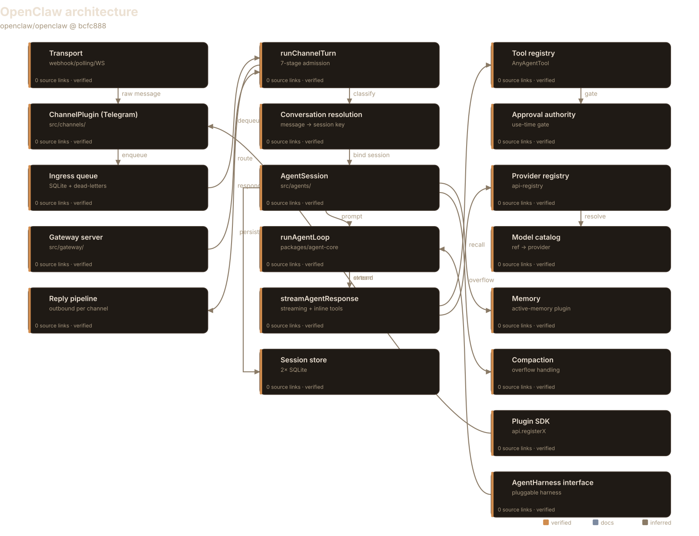
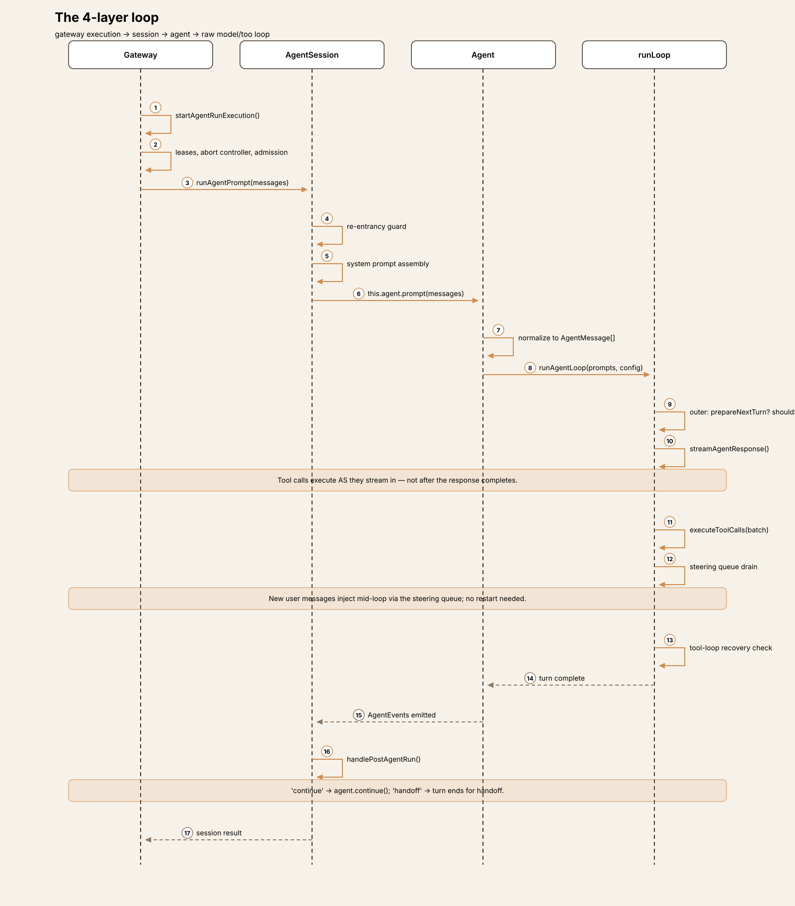
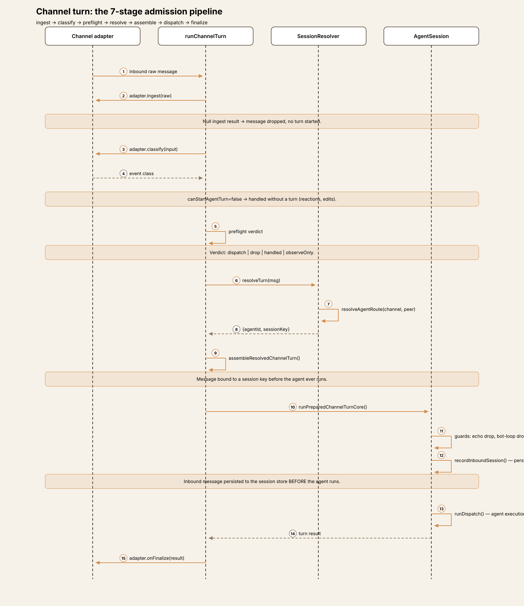
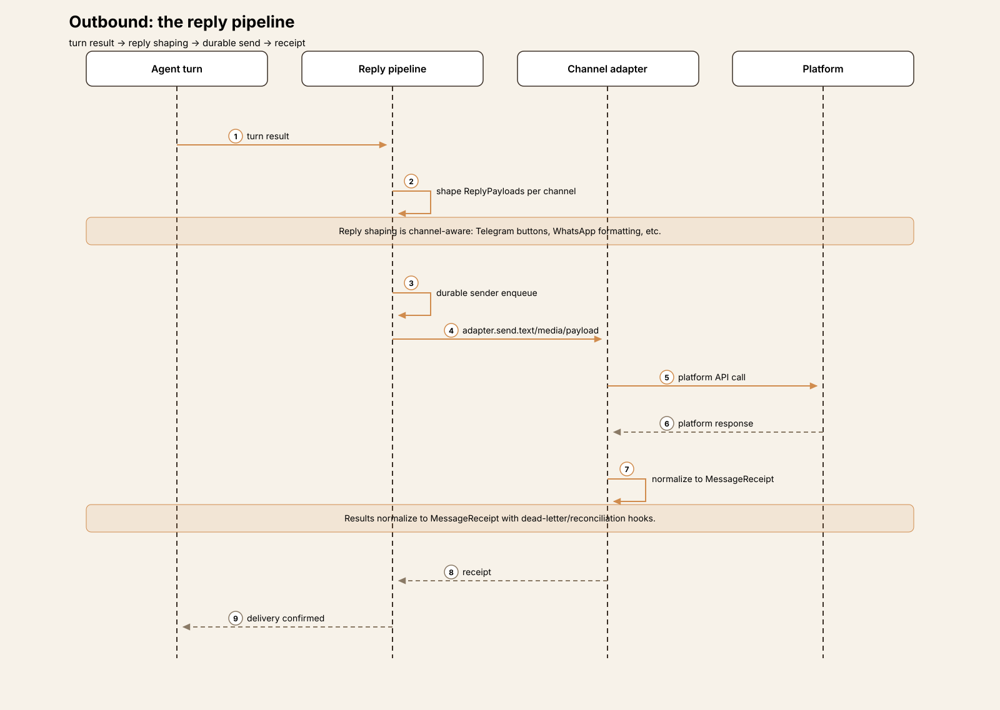
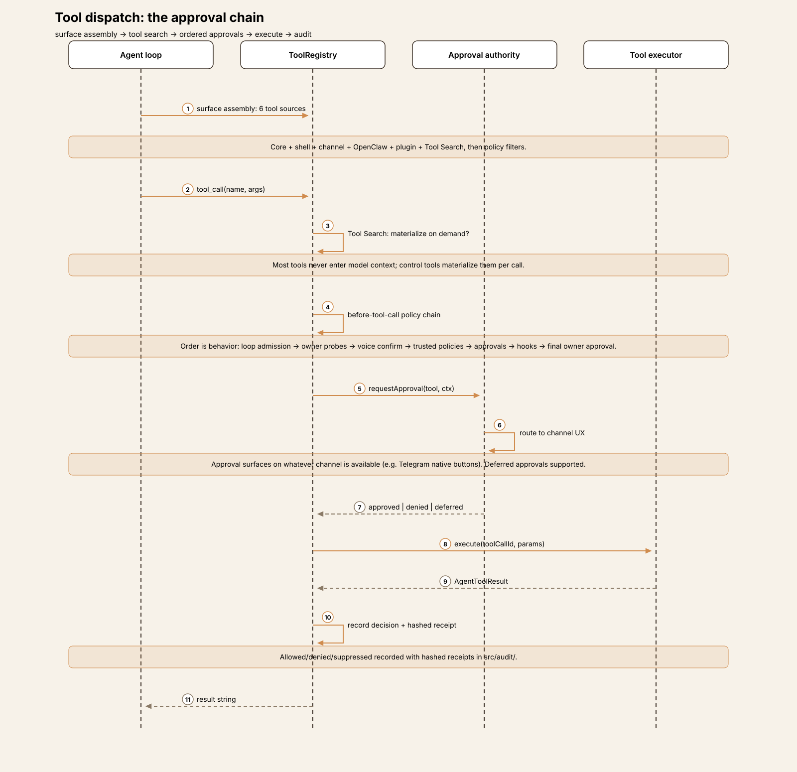
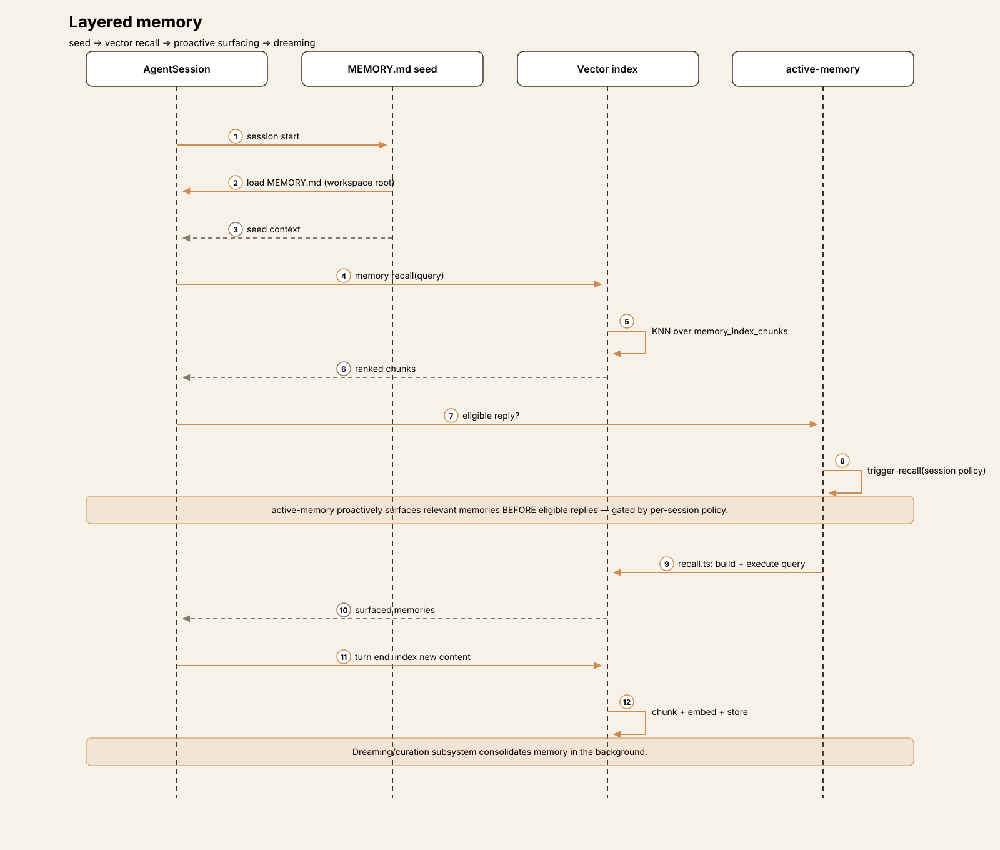

Agent Harness Anatomy #9: OpenClaw — the channel-first gateway
Series: Agent Harness Anatomy — top-down dissections of real agent harnesses, grounded in verifiable source code. Every behavioral claim below carries a footnote to a pinned GitHub permalink; the full evidence lives in the endnotes.
Version block
- Repo: openclaw/openclaw
- Pinned: tag
v2026.9.9→bcfc88812a35243893585dbeca87ca41b48272ca(2026-10-08) - Language: TypeScript (pnpm monorepo)
- Claim under test: "Multi-channel AI gateway with extensible messaging integrations"

Explore the interactive architecture diagram 19 nodes, 18 edges — pan, zoom, and follow every subsystem linkThe mental model
Every harness in this series so far has been a program you run: a terminal app, an IDE extension, a CLI. OpenClaw inverts the relationship. It is a long-running gateway server that hosts agent turns, and the primary way you talk to it is through messaging channels — WhatsApp, Telegram, Discord, Signal, Slack — not a terminal.1 The CLI and web UI are secondary surfaces on a system whose core abstraction is the inbound message, not the prompt.
The architecture follows from that inversion. Where pi has a loop and a TUI, OpenClaw has four nested loop layers, a staged message-admission pipeline, a durable ingress queue with dead-letters, per-channel session binding, and a pluggable harness interface that can dispatch turns to non-OpenClaw harnesses.2 It is the broadest harness in the series by a wide margin — ~100 bundled extensions, 550+ config schema files — and the only one whose distinctive question is not "how does the loop work" but "how does a WhatsApp message become an agent turn."3
The governing tradeoff: OpenClaw pays for its breadth with machinery. Every message traverses ingest → classify → preflight → resolve → assemble → dispatch → finalize before the model ever sees it.4 You get a multi-tenant, multi-channel agent platform; you pay in pipeline stages, session-binding policy, and operational surface. If you're building a harness, that's OpenClaw's thesis in one sentence: the channel is the product, the loop is a component.
Package map
The repo is a pnpm monorepo. For this article five areas matter:5
| Area | Role |
|---|---|
packages/agent-core/ | The model-agnostic loop: runLoop, Agent class, event types |
packages/llm-core/ + packages/ai/ | Provider type contracts and the API registry |
src/agents/ | Session orchestration, tool surface, harness lifecycle, embedded runner |
src/channels/ | Channel framework: admission pipeline, ingress queue, session binding |
src/gateway/ | The long-running server: receive/send, reply pipeline, boot |
extensions/ | ~100 bundled plugins: channels, providers, utilities |
Everything else (apps/, ui/, crates/, deploy/, …) is out of scope for the core trace. The lineage, per VISION.md, runs Warelay → Clawdbot → Moltbot → OpenClaw.6
The core loop
The loop is deliberately factored into four nested layers, each adding orchestration around the one below. This is the most layered loop architecture in the series.
Layer 1 — runLoop(), the raw model→tool loop. Lives in the model-agnostic @openclaw/agent-core package, which knows nothing about channels or gateways.7 Two nested while loops: the outer iterates turns, the inner runs while tool calls or steering messages remain.8 Each inner iteration streams the model response and executes tool calls as they arrive in the stream — not after the response completes — via streamAgentResponse with async tool-batch scheduling.9 New user messages can be injected mid-loop through the steering queue without restarting it.10 Each outer iteration consults two hooks, prepareNextTurn and shouldStopAfterTurn — there is no hard max-turn counter in agent-core itself; loop control is delegated to configuration.11 A tool-loop recovery detector watches for pathological tool-call cycles and intervenes.12
Layer 2 — the Agent class, transcript ownership. packages/agent-core/src/agent.ts (export class Agent, 724 lines) owns the mutable message state, the steering queue, and the follow-up queue, and emits typed AgentEvents.13 prompt() normalizes input and runs the loop; continue() resumes from the transcript tail (which must end in user or tool-result, never assistant).14
Layer 3 — AgentSession, the session orchestrator. A mixin chain (AgentSession → AgentSessionTree → … → AgentSessionBase) adding prompting, execution, compaction, extensions, and inspection.15 runAgentPrompt guards re-entrancy, runs the prepared loop, then handles post-run directives: "continue" runs the agent again, "handoff" ends the turn for handoff.16 Execution adds auto-retry with exponential backoff — retryable on rate-limit and server errors, not on context overflow, which routes to compaction instead.17
Layer 4 — gateway execution. The session run is wrapped in operational machinery: prepared model-runtime leases, per-run abort controllers, lifecycle generation assertions, and work-admission continuations.18 The src/gateway/agent-turn/ directory holds 54 files covering admission control, dedupe, restart recovery, subagent runs, and terminal outcome production — the loop's execution environment, not the loop itself.
The notable abstraction: AgentHarness. OpenClaw defines a pluggable harness interface — runAttempt(params) — and the lifecycle code explicitly handles "Non-OpenClaw harnesses," giving them child run traces.19 The gateway can dispatch turns to other agent harnesses through this contract. No other teardown in the series has a harness-abstraction layer; here the harness is itself hostable.

One turn, end to end
Trace: a Telegram message reading summarize today's standup notes arrives while the gateway is running.
① Ingress. The Telegram channel plugin — built with createChatChannelPlugin(), composing ~25 optional adapters (security, pairing, threading, outbound, …) rather than written from scratch20 — receives the raw update through its transport (long-poll or webhook) and calls the SDK entry runChannelInboundEvent, a thin wrapper over the admission pipeline.21 Channels run in-process inside the gateway; each channel's startAccount opens its own transport to the platform.22
② Admission. Every inbound message traverses runChannelTurn's staged pipeline: ingest (channel-specific raw → normalized input; null → drop) → classify (event class; non-turn events like reactions are handled without starting a turn) → preflight (admission verdict: dispatch | drop | handled | observeOnly) → resolveTurn → assemble (binds the message to a session key via route resolution) → dispatch → finalize.4 This is a message-processing architecture grafted onto an agent loop — nothing in the previous eight teardowns looks like it.

③ Persistence before execution. The dispatch core, runPreparedChannelTurnCore, applies guards first (outbound-echo drop, bot-loop protection), then persists the inbound message to the session store before the agent runs — the turn is durable before it is executed.23 For reliability, channels may enqueue into a SQLite-backed ingress queue instead of calling the turn runner directly; the drain claims leases with per-lane serialization, retry, dead-letter, and a stall watchdog for at-least-once ordered delivery.24
④ Session binding. Route resolution maps the channel, account, and peer to an agent ID and session key; conversation resolution and thread bindings attach the message to the right conversation, with multi-account channels resolving to separate sessions.25
⑤ Execution. The gateway's agent-turn layer provides the dispatch function, which runs the four-layer loop described above against the bound session — history loaded from the per-agent SQLite store, replay validated, context-window limited, assembled by the context engine.26
⑥ Reply. Agent output becomes ReplyPayloads shaped per channel by the reply pipeline, sent through a durable sender, and normalized to MessageReceipts with dead-letter and reconciliation hooks.27 Approval prompts, where needed, surface as native channel UI — Telegram inline buttons, for example.28

The tradeoff of the pipeline: every message pays the admission cost even when the verdict is trivially dispatch — but the gateway gains uniform policy enforcement, durability, and multi-tenancy. A single-user CLI harness would never build this; a messaging platform must.
Subsystem inventory
- Tools. The
AnyAgentTooltype (TypeBox params, display metadata, catalog mode, execution timeouts, before-call param hooks) is registered through a registrar supporting static declarations and runtime tool factories.29 The effective tool surface merges six sources — core, shell, channel, OpenClaw, plugin, and Tool Search — then applies sandbox, profile, provider, sender, group, and sub-agent policy filters.30 Channel plugins contribute channel-owned agent tools through theagentToolsadapter.20

- Tool Search catalog. Most tools never enter the model context. The model uses control tools, and a per-call executor materializes searched tools on demand — a retrieval layer inside the tool system.30
- Approvals. An explicitly ordered policy chain where ordering is behavior: loop admission → owner probes → voice confirmation → trusted policies → approvals → normal hooks → final owner approval.31 The gateway adds a use-time authority gate bound to the run's delegated authority, not just the tool name; decisions are audited with hashed receipts, and plugins can request deferred approvals.32
- Providers.
packages/llm-coredefines the transport-adapter contract (stream/streamSimplereturning a normalized async-iterable event stream);packages/ai's registry maps API IDs to providers, with built-in transports and per-vendor extensions declaring auth, model catalogs, and thinking policies.33 The agent loop consumes streaming by default;modelFallbackis last-resort chain resolution, never runtime failover on error.34 - Sessions and state. Two SQLite databases via
node:sqlite, no external server: a shared state DB (cross-agent state, append-onlysession_state_eventswith per-agent cursors, lease/worker mutual exclusion) and a per-agent DB holding the authoritative conversation history assession_nodes→session_windows→transcript_events(append-only,(session_id, seq)keyed, with compressed blobs and FTS indexing).35 - Memory. Layered: a canonical
MEMORY.mdseed loaded at session start, a vector/keyword index in the agent DB, and the bundledactive-memoryplugin that proactively surfaces relevant memories before eligible replies, gated by per-session policy — plus a dreaming/curation subsystem.36

- Config. A 550-file schema-driven system with dot-notation access, prototype-pollution guards, and wizard flows; model config supports merge/replace modes over a provider map.37
Extension points
OpenClaw's extension model is the most formal in the series: a capability-typed plugin system where plugins register capabilities through api.registerX — providers, channels, embeddings, speech, media generation, web fetch, gateway discovery, migrations — and are classified by shape (single-capability, hybrid, hook-only).3 Each extension carries an openclaw.plugin.json manifest (id, categories, activation policy, config schema, doctor contract); the Telegram manifest declares activation.onStartup: false, keeping heavy channel imports off the startup hot path via lazy specifiers.38 Heavy modules stay lazy throughout the runtime.39
Skills deserve a callout because they invert the Hermes pattern: in OpenClaw, skills are instruction packs, not tools. Named folders under skills/ hold SKILL.md files with YAML frontmatter; they flow into runs through the prompt system (skillsSnapshot, instruction-delivery caches) and user-invocable chat commands, steering the model toward real tools rather than being callable themselves.40 The gateway even supports skill authoring as a first-class flow.41
Deliberate omissions
There is no runtime model failover — modelFallback resolves a chain at configuration time and never switches providers mid-run on error.34 The agent-core loop has no built-in iteration cap; control is delegated to the shouldStopAfterTurn hook and the gateway's retry budgets.11 And the AgentHarness interface notwithstanding, no non-OpenClaw harness implementations ship bundled — it is a contract awaiting implementations, not a working multi-harness router today.19
Read the omissions as scope discipline: OpenClaw's complexity budget is spent on channels, admission, and multi-tenancy. The loop itself stays delegated and hook-driven rather than opinionated.
Comparison matrix row
| # | Dimension | OpenClaw (v2026.9.9) |
|---|---|---|
| 1 | Agent loop | 4 nested layers; streaming tool exec; steering injection; hook-driven stop (no hard cap) 811 |
| 2 | Tool system | AnyAgentTool registry + factories; 6-source surface merge; Tool Search catalog 2930 |
| 3 | Model providers | llm-core transport contract; api-registry; per-vendor extensions; no runtime failover 3334 |
| 4 | Prompt construction | Context-engine assembly; skills via prompt system; session-bound 2640 |
| 5 | Memory/session | 2× SQLite; session_nodes→windows→transcript_events; layered memory + active recall 3536 |
| 6 | Reasoning/planning | Subagents via harness; tool-loop recovery; retry budgets 1219 |
| 7 | Extensibility | Capability-typed plugins (api.registerX); ~100 bundled; lazy loading 339 |
| 8 | Interfaces | Channel-first: ~25 channel adapters; Telegram template; CLI/UI secondary 120 |
| 9 | Failure handling | Ingress dead-letters; retry with backoff; compaction on overflow (never retry) 2417 |
| 10 | Security model | Staged admission verdicts; ordered approval chain; hashed-receipt audit; delegated authority 43132 |
Endnotes
All notes VERIFIED against v2026.9.9
(bcfc88812a35243893585dbeca87ca41b48272ca).
GH = https://github.com/openclaw/openclaw/blob/bcfc88812a35243893585dbeca87ca41b48272ca/.
-
Package tagline in GH…/package.json (
"description": "Multi-channel AI gateway with extensible messaging integrations"). ↩ -
AgentHarnessinterface withrunAttemptat GH…/src/agents/harness/types.ts#L437; non-OpenClaw harness handling at GH…/src/agents/harness/lifecycle.ts#L300. ↩ -
Capability registration model documented in
docs/plugins/architecture.md(GH…/docs/plugins/architecture.md); ~100 extensions under GH…/extensions/; 550+ files under GH…/src/config/. ↩ -
runChannelTurnstaged pipeline at GH…/src/channels/turn/run-channel-turn.ts#L146 (ingest → classify → preflight → resolveTurn → assemble → dispatch → finalize). ↩ -
Monorepo layout:
packages/agent-core,packages/llm-core,packages/ai(GH…/packages/);src/agents,src/channels,src/gateway(GH…/src/). ↩ -
Lineage in GH…/VISION.md#L13 ("Warelay -> Clawdbot -> Moltbot -> OpenClaw"). ↩
-
async function runLoopat GH…/packages/agent-core/src/agent-loop.ts#L141; public wrappersrunAgentLoop/runAgentLoopContinueat L68/L81. ↩ -
Nested
whilestructure inrunLoop(GH…/agent-loop.ts#L141). ↩ -
streamAgentResponsein GH…/packages/agent-core/src/agent-stream-response.ts executes tool calls as they stream in, with async batch scheduling. ↩ -
Steering via
pendingMessages/getSteeringMessages/commitPendingMessagesin GH…/packages/agent-core/src/agent-loop.ts. ↩ -
Outer-loop hooks
config.prepareNextTurn?.()andconfig.shouldStopAfterTurn?.()consulted per iteration in GH…/packages/agent-core/src/agent-loop.ts; no hard max-turn counter in agent-core (negative finding: grep formaxTurns|maxIterationsinpackages/agent-core/srcreturns nothing). ↩ -
Tool-loop recovery via
toolLoopRecoveryState.criticalToolLoopSeenin GH…/packages/agent-core/src/agent-loop.ts. ↩ -
export class Agentat GH…/packages/agent-core/src/agent.ts#L270 (724-line file). ↩ -
prompt()/continue()transcript-tail requirements in GH…/packages/agent-core/src/agent.ts. ↩ -
Mixin chain
AgentSession→AgentSessionTree→AgentSessionBasein GH…/src/agents/sessions/. ↩ -
runAgentPromptre-entrancy guard and post-run"continue"/"handoff"handling in GH…/src/agents/sessions/agent-session-prompting.ts. ↩ -
Auto-retry with exponential backoff; retryable on rate-limit/server errors, context overflow → compaction, in GH…/src/agents/sessions/agent-session-execution.ts. ↩
-
startAgentRunExecutionat GH…/src/gateway/agent-turn/agent-run-execution-phase.ts#L70; 54 files under GH…/src/gateway/agent-turn/. ↩ -
createChatChannelPlugin()at GH…/src/plugin-sdk/core.ts#L734;ChannelPlugincontract (~25 adapters) at GH…/src/channels/plugins/types.plugin.ts#L48; channel-owned agent tools via theagentToolsadapter. ↩ -
runChannelInboundEventat GH…/src/plugin-sdk/channel-inbound.ts#L240. ↩ -
Channels run in-process;
startAccountlifecycle seam in GH…/src/gateway/server-channels.ts. ↩ -
runPreparedChannelTurnCoreat GH…/src/channels/turn/execution.ts#L208 (guards →recordInboundSession→params.runDispatch()). ↩ -
SQLite-backed
ChannelIngressQueuein GH…/src/channels/message/ingress-queue.ts; drain with claim leases, per-lane serialization, retry/dead-letter insrc/channels/message/ingress-drain.ts. ↩ -
Route resolution
resolveAgentRoutein GH…/src/routing/resolve-route.ts; conversation resolution in GH…/src/channels/conversation-resolution.ts. ↩ -
History preparation:
prepareEmbeddedAttemptHistoryin GH…/src/agents/embedded-agent-runner/run/attempt-history-prepare.ts; retry budgetBASE_RUN_RETRY_ITERATIONS = 24in GH…/src/agents/embedded-agent-runner/run/helpers.ts#L51. ↩ -
Reply pipeline in GH…/src/channels/message/reply-pipeline.ts;
MessageReceiptnormalization insrc/channels/message/receipt.ts. ↩ -
Telegram native approval UI in GH…/extensions/telegram/src/approval-native.ts. ↩
-
AnyAgentTooltype at GH…/src/agents/tools/common.ts#L53; registry viacreateToolHookRegistrarsin GH…/src/plugins/registry-registrars-tools-hooks.ts. ↩ -
Surface assembly merging six tool sources plus policy filters in GH…/src/agents/agent-tools.ts; Tool Search on-demand materialization via
attempt-tool-search-executor.ts. ↩ -
Approval policy chain ordering ("ordering is behavior") at GH…/src/agents/agent-tools.before-tool-call.policy.ts#L4. ↩
-
Gateway approval authority at GH…/src/gateway/agent-runtime-approval-authority.ts#L11; hashed-receipt audit in
src/audit/. ↩ -
packages/llm-core/src/types.ts(StreamFunction, provider contracts); registrycreateApiRegistryin GH…/packages/ai/src/api-registry.ts; stream facade in GH…/src/llm/stream.ts. ↩ -
modelFallbackas last-resort chain resolution, never runtime failover, in the provider/model configuration (GH…/src/llm/). ↩ -
Shared state schema in GH…/src/state/openclaw-state-schema.sql; per-agent schema in GH…/src/state/openclaw-agent-schema.sql (
session_nodes,session_windows,transcript_events); Kysely overnode:sqlitein GH…/src/infra/kysely-sync.ts. ↩ -
CANONICAL_ROOT_MEMORY_FILENAME = "MEMORY.md"in GH…/src/memory/root-memory-files.ts#L7;active-memoryplugin entry in GH…/extensions/active-memory/index.ts. ↩ -
550+ files under GH…/src/config/; central accessor
getRuntimeConfig()insrc/config/config.js. ↩ -
Telegram manifest at GH…/extensions/telegram/openclaw.plugin.json (
activation.onStartup: false); bundled entry viadefineBundledChannelEntryin GH…/extensions/telegram/index.ts#L4. ↩ -
Lazy runtime modules via
createLazyRuntimeModulein GH…/src/plugin-sdk/lazy-runtime.ts. ↩ -
Skills as prompt-delivered instruction packs:
skillsSnapshotandcreateSkillInstructionDeliveryCacheinsrc/skills/; lifecycle under GH…/src/skills/. ↩ -
Gateway skill authoring via
prepareGatewaySkillAuthoringin GH…/src/gateway/skill-library-authoring.ts. ↩